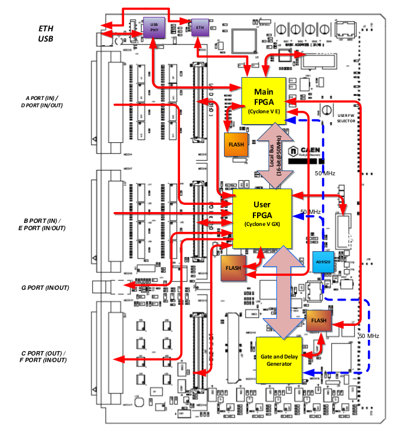
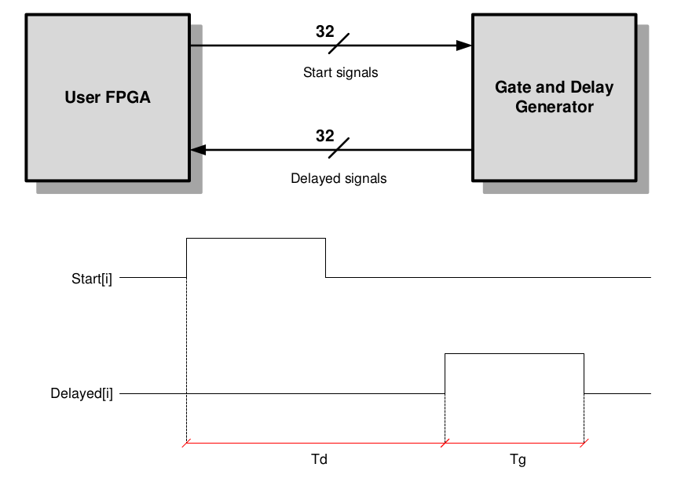

硬件¶
USB Interface¶
The DT5495 is equipped with a USB2.0 interface. The USB physical layer is managed by a high-speed transceiver controlled by the Main FPGA.
Ethernet Interface¶
In addition to the USB, the DT5495 provides a 10/100T Ethernet interface controlled by the Main FPGA.
Main FPGA¶
The MFPGA (Altera Cyclone V E) manages the Ethernet and USB interfaces and the connection with the UFPGA through a proprietary 16-bit 50 MHz local bus. The MFPGA has a dedicated external flash memory for configuration purposes.
It also pilots the flash memories dedicated to loading the firmware on the UFPGA and on the GDG.
User FPGA¶
The User FPGA (Altera Cyclone V GX) manages the I/O peripherals (A/D, B/E, G, C/F ports) and communicates with the GDG. A dedicated external flash memory can store a set of firmware images to be loaded on the User FPGA. A dedicated JTAG connector allows to program the UFPGA “on-the-fly” for fast firmware prototyping and debugging.
Gate and Delay Generator¶
The DT5495 hosts a Gate and Delay Generator able to provide up to 32 gated and delayed signals(“delayed signals”) triggered by 32 inputs (“start signals”). The gate width and delay value are user programmable. The GDG is an external component implemented in a Xilinx Spartan-6 FPGA. It is connected through a serial bus (SPI) to the User FPGA for gate and delay register programming (refer to Sect. Gate and Delay Controller for detailed information).
The GDG configuration is stored in a dedicated flash memory. The GDG firmware cannot be modified by the user.
Clock Distribution¶
Each FPGA receives the same 50-MHz system clock generated by a common on-board oscillator.